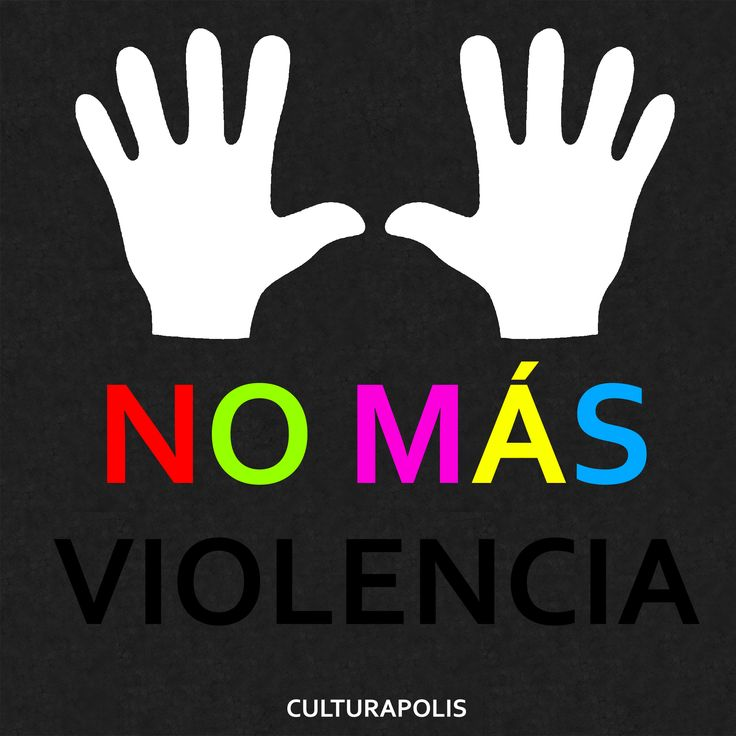
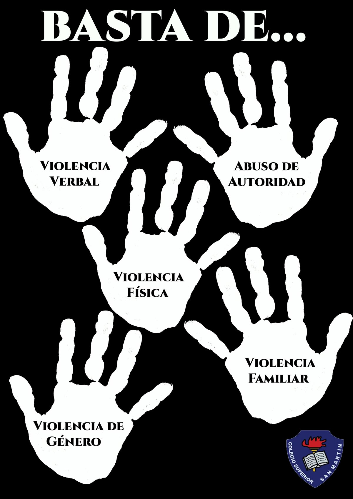

No al Bullying
El bullying es un problema que afecta a millones de estudiantes en todo el mundo. Este tipo de violencia puede presentarse mediante insultos, burlas, amenazas, golpes o incluso por medio de redes sociales.
Muchas veces las víctimas sienten miedo, tristeza o inseguridad, lo que puede afectar su autoestima, su rendimiento escolar y su salud emocional.

Importancia del respeto
Respetar a los demás es una de las mejores maneras de prevenir el bullying. Todas las personas merecen ser tratadas con amabilidad, sin importar su apariencia, gustos o personalidad.
Crear un ambiente sano dentro de la escuela ayuda a que todos los estudiantes se sientan seguros y felices.

¿Cómo prevenir el bullying?
- Practicar el respeto y la empatía.
- Evitar insultos y burlas.
- Denunciar situaciones de violencia.
- Apoyar a las personas que sufren acoso.
- Resolver problemas mediante el diálogo.
- Promover la inclusión y la amistad.
Mensaje final
Decir “No al bullying” significa construir una escuela más segura, respetuosa y feliz para todos. Cada pequeña acción de amabilidad puede hacer una gran diferencia en la vida de otra persona.

{kind=link}
{kind=link}
{kind=link}